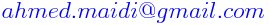

|
|
|
Ahmed MAIDI
Professeur

|
|
|

Département Automatique
Faculté de Génie Electrique et d'Informatique
Université Mouloud MAMMERI (UMMTO)
15 000 Tizi-Ouzou, Algérie (Algeria)
|
Commande Optimale (Master 1 Académique, Option : Automatique et Systèmes)
Pré-requis
- Analyse.
- Modélisation des systèmes dynamiques.
- Méthodes numériques.
- Automatique de base.
Programme
- Chapitre 1 : Formulation d'un problème de commande optimale (optimisation dynamique).
- Chapitre 2 : Calcul des variations.
- Chapitre 3 : Principe du minimum.
- Chapitre 4 : Commande linéaire quadratique (LQ).
- Chapitre 5 : Programmation dynamique.
Travaux pratiques
- TP 1 : Résolution analytique des équations différentielles ordinaires.
- TP 2 : Résolution numérique des équations différentielles ordinaires.
- TP 3 : Résolution des conditions d'optimalité 1 : équation d'Euler-Lagrange,
- TP 4 : Résolution des conditions d'optimalité 2 : équations d'Hamilton-Pontryaguine.
- TP 5 : Résolution des conditions d'optimalité 3 : équation de Riccati.
- TP 6 : Simulation et implémentation pratique d'une commande optimale (cas d'un circuit électrique).
Télécharger les textes travaux pratiques.
Travaux dirigés
Télécharger la série d'exercices.
Examens et solutions
Télécharger les examens corrigés.
Documentation
Liste des ouvrages disponibles au niveau de la bibliothèque de
la Faculté de Génie Electrique et d'Informatique (Université Mouloud
MAMMERI de Tizi-Ouzou) :
- P. NASLIN. Théorie de la commande et conduite optimale. Dunod, Paris,
1969 (Référence : C 74).
- J.-P. BABARY et W. PELCZEWSKI.
Commande optimale des systèmes continus déterministes. Masson, Paris, 1985 (Référence : C 95).
- M. BERGOUNIOUX. Optimisation
et contrôle des systèmes linéaires. Dunod,
Paris, 2001 (Référence : C 187).
- H. ABOU-KENDIL. La commande optimale des systèmes dynamiques. Lavoisier,
Paris, 2004 (Référence : C 247).
- J.-P. CORRIOU.
Commande des Procédés. Lavoisier, Paris, 2004 (Référence : C 55).
Dernière modification : 27 décembre 2021.